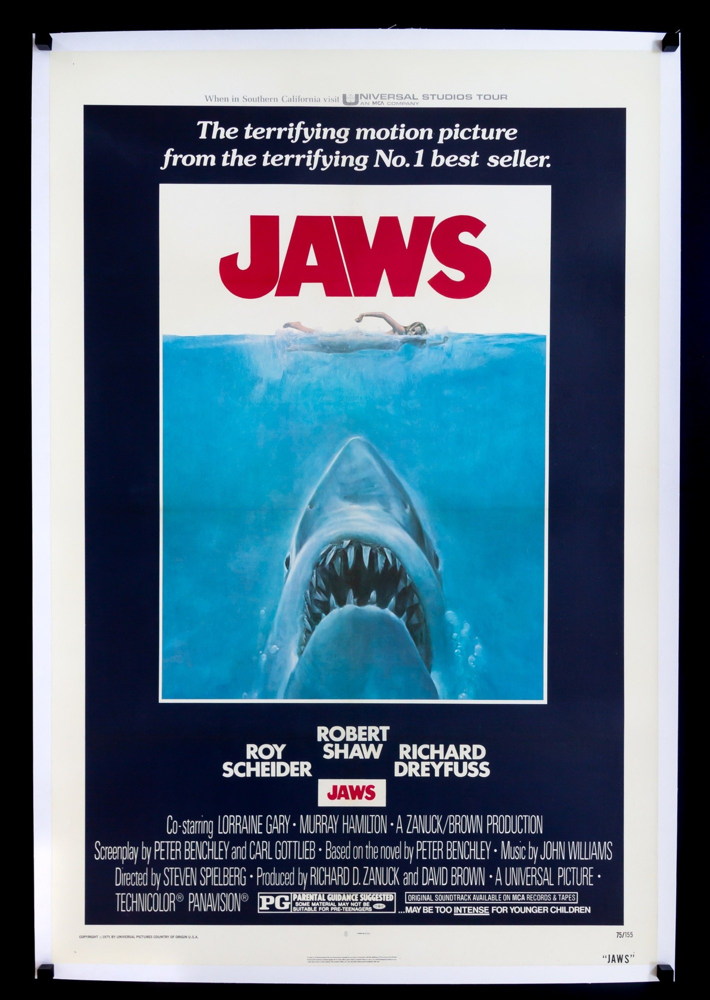
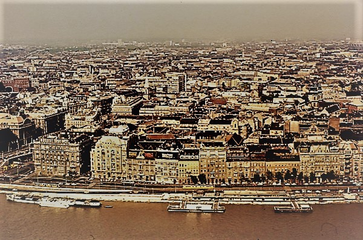

Sokat gondolkoztam, hogy mit adjak neked az idén, és arra jutottam, hogy szeretnék olyat adni ami emlékként is megmarad. Így neki láttam felkutatni az internetet és ősszegyűjtöttem az születésnapdról egy pár érdekességet. Ezzel is szertenék neked nagyon boldog születésnapot kívánni!
A születésnapod egy Keddi napra esett, a hőmérséklet 7 fok körül volt.
Az első 1 billiomodik másodperced valamikor 2006 Szeptember 29-én volt.
Különc vagy lángész, de mindenképpen rendkívüli személyiség.
Akadályt nem ismerő, nagyra törő típus, erős akaratú, állhatatos és idealista. Szellemi függetlenségén féltőn őrködő, a művészetek és a tudományok terén otthonosan mozgó, állandóan újító, reformáló természetével sok hívet szerez.
Humánus gondolkodású, szociális érzékenysége fejlett. Álarcot visel, és csak kevesen látnak mögé.
A levegős vagy légies jegyek jellemzője a mozgékonyság, a könnyedség, a kötetlenség, a szerteágazó figyelem, s nagyon erősen kötődik hozzájuk az intellektus.
Friss szellemmel kommunikálnak, igazi társasági emberek, képviselői a diplomáciának és médiának, alaptermészetük az intellektuális mozgás szeretete.
A Nyúl nagylelkű, érzékeny és odaadó. Az ebben a jegyben születettek lélekben örök fiatalok maradnak.
Természetéből fakadóan óvatos, nem szereti a kockázatot, kerüli az összetűzéseket.
Jellemzi őket a nagyvonalúság és a magabiztosság. Többnyire kiegyensúlyozottak. Kedvelik az eleganciát, szépségszeretők, kifinomultak, könyörületesek.
Sokra képesek, okosak, sőt ravaszak, de hajlamosak többet vállalni, mint amennyit valóban el is tudnak végezni.
Alkalmazkodóképességük remek, de igénylik a szabadságot és a változatosságot. Erősek, önállóak, tele vannak energiával, szenvedélyük a gyarapítás, terjeszkedés és megvilágosítás.
Ragyogó gondolataik vannak, sőt még a hatodik érzékkel is rendelkeznek, így a Macskák teljes egészében képesek értelmezni a világot.
Éppen ezért legtöbbször más szempontok szerint tekintenek környezetükre, mások a meglátásaik.
Emberbarátok, ezért könnyű őket megszeretni. Néha viszont visszahúzódóak, mert nem szeretnek a figyelem középpontjában lenni, inkább távolról szemlélik az eseményeket.
Jó indulat vezérli őket, nagyon kreatívak, így szükségük van egy olyan térre, ahol kiélhetik művészi hajlamaikat.
The Celts believed that the Green Dragon breathed fire that had the power to purify and give new life.
Erős személyiséggel rendelkező kalandorok, akiket Uránusz tart uralma alatt. Kockázatkedvelők, akik hol nyíltak, hol zárkózottak.
A legtöbbet hallgatott zene ezen a napon a: Please Mr. Postman a Carpenters együttestől.
A legnézetten film 1975-ben pedig: a Cápa volt.

Ezen a listán szerepel a születési évedtől a mai napig minden évből a leghallgatottab szám.
Készítettem egy Spotify fiókot is amit akár máskor is használhatsz.